Geschossdecken, Dächer, Treppen und Bauteile
Geschossdecken, Dächer, Treppen und Geländer werden im Skizzenmodus gezeichnet: Zuerst werden ihre Linien skizziert, und das Element entsteht erst, wenn die Skizze beendet wird. Bauteile (Möbel und Sanitärobjekte) werden mit einem Klick platziert. Vorhangfassaden sind in Wände, Türen und Fenster beschrieben.
Skizzenmodus
Erzeugen ▸ Erstellen ▸ Bodenbelag, Dach, Treppen und Geländer öffnen den Skizzenmodus. Die kontextabhängige Karte ist nach dem Skizzierten benannt (Bearbeiten | Geschossdecken-Begrenzung erstellen, Dachgrundfläche erstellen, Treppenskizze erstellen, Geländerpfad erstellen) und enthält:
- die Gruppe Modus: Bearbeitungsmodus beenden erzeugt das Element; Bearbeitungsmodus abbrechen verwirft die Skizze und lässt das Modell, wie es war;
- die Gruppe Zeichnen mit den Zeichenwerkzeugen des Elements;
- bei Treppen und Geländern die Gruppe Werkzeuge.
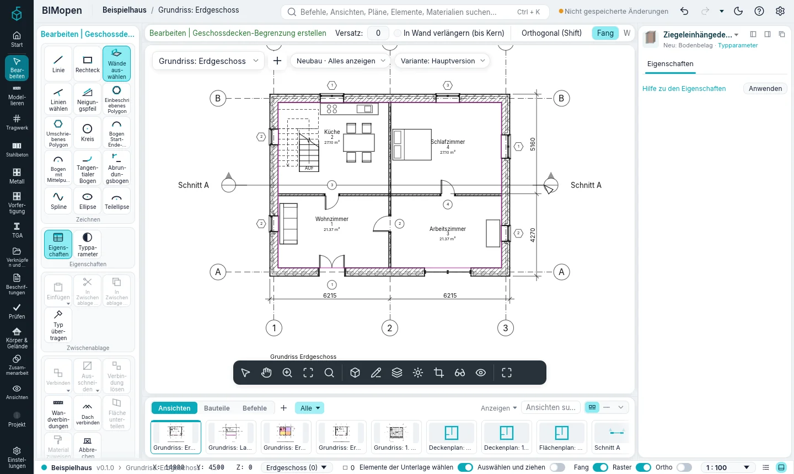
Beim Skizzieren entsteht nichts: Die Linien sind magenta, und das Modell ändert sich erst mit Bearbeitungsmodus beenden. Das ganze Element ist dann ein einziger Schritt im Verlauf: ein Ctrl+Z entfernt es.
Linien zeichnen
| Werkzeug | Wie es zeichnet |
|---|---|
| Linie | Punkt für Punkt klicken: Jeder Klick beendet eine Linie und beginnt die nächste. Länge und Winkel der Linie unter dem Cursor stehen daneben; Shift hält sie waagerecht oder senkrecht. Ist Fortsetzen im Optionsstreifen aus, wird jede Linie einzeln gezeichnet. Ein Klick auf den Anfang der Kette schließt die Umgrenzung Eine Länge eingeben und Enter drücken: Die Linie endet so weit in Richtung des Cursors (auch der Lauf einer Treppe). |
| Rechteck | Zwei gegenüberliegende Ecken: vier Linien |
| Wände auswählen | Eine Wand anklicken: Ihre Linie kommt in die Skizze (siehe unten). Tab über einer Wand und dann ein Klick wählt die ganze Kette der an den Enden verbundenen Wände |
| Linien wählen | Über eine Wand, ein Raster, eine Linie oder die Kante einer Geschossdecke oder eines Dachs fahren: Die Linie unter dem Cursor wird hervorgehoben und benannt (die Flächen der Wand, jede Schichtgrenze, ihre zwei Tragschichtbegrenzung-Linien und ihre Achse); Tab geht zur nächsten dort. Klicken fügt eine Skizzenlinie darauf hinzu (um Versatz zum Cursor hin versetzt) |
| Neigungspfeil | Ende, dann Spitze des Pfeils anklicken (Geschossdecken und Dächer) |
Versatz im Optionsstreifen verschiebt die gezeichneten Linien (und die der ausgewählten Wände) um diesen Abstand.
Die Bögen der Gruppe Zeichnen (und ein Kreis, als zwei Hälften) sind je eine Skizzenlinie: als Bögen gewählt, bemaßt und gezogen, vom Bodenbelag, Dach, von der Treppe, dem Wandprofil oder Bereich behalten und von Begrenzung bearbeiten, Skizze bearbeiten oder Begrenzung bearbeiten als Bögen zurückgegeben. In jeder Ansicht fängt ein Skizzenpunkt an den Enden und Mittelpunkten der Linien und Bögen der Skizze, an Bogenmittelpunkten, wo sich Linien schneiden und auf einer Linie oder einem Bogen; vom Punkt aus, von dem gezeichnet wird, am Lotfußpunkt und am Punkt, an dem eine Linie einen Bogen berührt. Das Symbol und sein Name zeigen, wo der Punkt fängt; S C und S P verlangen für den nächsten Punkt den Mittelpunkt oder das Lot.
Geschossdecken und Dächer brauchen geschlossene Umgrenzungen. Eine Umgrenzung innerhalb der äußeren ist eine Öffnung: Die Geschossdecke oder das Dach hat dort ein Loch. Findet Bearbeitungsmodus beenden Linien, die sich nicht schließen oder sich schneiden, sagt eine Meldung das, und die Skizze bleibt zum Korrigieren offen (Weiter).
Skizzenlinien auswählen und ändern
Esc beendet die laufende Kette; ein zweites Esc legt das Zeichenwerkzeug ab (wie Ändern). Solange die Skizze offen ist, sind ihre Linien Elemente der Ansicht, und Ändern wirkt auf sie wie auf andere Linien; nichts anderes kann gewählt werden, bis die Skizze beendet ist:
- die Linie unter dem Cursor wird hervorgehoben; ein Klick wählt sie, Ctrl fügt Linien hinzu, Shift nimmt sie weg, ein Fenster wählt mehrere, Tab die Kette verbundener Linien;
- das Ende einer allein gewählten Linie wird allein gezogen: die Nachbarlinie bleibt, wo sie ist, und die Verbindung wird gelöst; ist eine Kette gewählt (Tab), werden die Enden, an denen ihre Linien zusammentreffen, gemeinsam gezogen; eine gezogene Linie nimmt die mit ihr verbundenen Linien mit;
- Verschieben, Kopieren, Drehen, An Linie spiegeln, In Reihe wiederholen, Ausrichten, Versatz, Kürzen/Verlängern und Element teilen wirken auf sie, und die Skizze bleibt offen;
- eine einzelne gewählte Linie zeigt temporäre Bemaßungen zur nächsten parallelen Linie auf jeder Seite (eine andere Skizzenlinie, der ursprüngliche Umriss der Wand, eine Wand, ein Raster, eine Ebene): auf den Wert klicken und einen Abstand eingeben verschiebt die Linie; das Symbol daneben macht daraus eine dauerhafte Bemaßung, die bleibt, solange die Skizze offen ist;
- ihre Eigenschaften stehen im Elementbereich: Definiert Neigung und Neigung, bei einer aus einer Wand gewählten Dachlinie ihr Überstand, und ihre Länge.
Ausrichten nimmt die Linie unter dem Cursor als Referenz, und Tab geht zur nächsten dort, so lässt sich eine Skizzenlinie an einer Schicht oder Tragschichtbegrenzung einer Wand ausrichten. Beim Zeichnen oder Ziehen eines Endes rasten die Punkte an den Ecken der Flächen, Schichten und Tragschichtbegrenzungen der Wände ein, dann auf diesen Linien. Del löscht die gewählten Linien. Ctrl+Z beim Skizzieren nimmt die letzte Änderung der Skizze zurück, nicht des Modells. Das alles funktioniert in Grundrissen, in Schnitten und Ansichten (die Begrenzung einer Wand) und, zum Wählen, Ziehen der Enden und Löschen, in der 3D-Ansicht.
Die Skizze eines Elements bearbeiten
Wählen Sie eine Geschossdecke, ein Dach, eine Treppe oder ein Geländer: Die Gruppe Modus seiner kontextabhängigen Karte hat Begrenzung bearbeiten (Geschossdecken), Grundfläche bearbeiten (Dächer), Skizze bearbeiten (Treppen) oder Pfad bearbeiten (Geländer). Der Skizzenmodus öffnet sich mit den Linien, Öffnungen, Neigungen und dem Pfeil des Elements; Bearbeitungsmodus beenden ändert dasselbe Element, Bearbeitungsmodus abbrechen lässt es unverändert.
Die Skizze öffnet mit aktivem Ändern: Ihre Linien lassen sich sofort wählen und ändern.
In einem Grundriss wird auf der Ebene skizziert; in der 3D-Ansicht liegt die Skizze auf der Ebene des Elements (Oberseite der Geschossdecke, Basis des Dachs), und die 3D-Ansicht bleibt offen.
Auch eine neue Geschossdecke kann in der 3D-Ansicht skizziert werden: dort gestartet legt Bodenbelag die Skizze auf die Ebene des Geschosses, die gezeichnete Linie folgt dem Cursor mit ihrer Länge, und Bearbeitungsmodus beenden erstellt die Decke, ohne die 3D-Ansicht zu verlassen. In der 3D-Ansicht wählt die Ebene des Optionsstreifens die Arbeitsebene: die Ebene, auf der die Skizze liegt und die Decke entsteht. Wände auswählen nimmt die Wand, deren Fläche unter dem Cursor liegt. Dächer über Grundfläche, Treppen und Geländer werden im Grundriss skizziert.
Geschossdecken
- Klicken Sie auf Erzeugen ▸ Erstellen ▸ Bodenbelag. Der Skizzenmodus beginnt mit Wände auswählen.
- Klicken Sie die Wände um die Geschossdecke an, oder drücken Sie Tab über einer von ihnen und klicken Sie, um alle zu wählen. Jede Linie liegt auf der Innenseite ihrer Wand; die Linien von Wänden, die sich treffen, werden gekürzt oder verlängert, bis sie sich in der Ecke treffen.
- Oder zeichnen Sie die Begrenzung mit Linie oder Rechteck; eine Umgrenzung darin ergibt eine Öffnung.
- Klicken Sie auf Bearbeitungsmodus beenden.
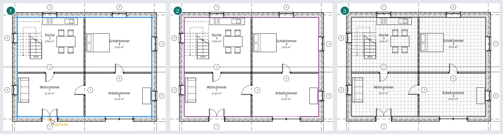
Im Optionsstreifen legt In Wand verlängern (bis Kern) die gewählten Linien in die Wand bis zur Fläche ihres Kerns, und Versatz verschiebt sie (ein negativer Versatz rückt sie von den Wänden ab). Der Typ der neuen Geschossdecke ist der in der Typenauswahl oben in Eigenschaften.
Geneigte Geschossdecken
Eine Geschossdecke neigt sich in eine einzige Richtung, beim Skizzieren auf eine von zwei Arten festgelegt:
- ein Neigungspfeil: Seine Eigenschaften sind Angeben (Höhe am Ende, aus den Höhen seiner beiden Enden, oder Neigung), Höhenversatz am Ende, Höhenversatz am Anfang und Neigung. Die Höhen werden von der Oberseite der Geschossdecke gemessen;
- eine Begrenzungslinie mit aktivierter Option Definiert Neigung und ihrer Neigung in Grad: Die Geschossdecke steigt von dieser Linie nach innen an.
Die Geschossdecke ist in 3D und in Schnitten geneigt. Ihr Neigungswinkel in Eigenschaften ändert die Neigung nachträglich.
Geschossdecken über Wänden
Kreuzt eine Geschossdecke Wände (etwa eine obere Decke auf den Wänden darunter), wird ihre Platte aus ihnen ausgeschnitten: In 3D und in Schnitten endet die Wand unter der Decke und geht darüber weiter, und durch die Öffnungen der Decke laufen die Wände hindurch.
Eigenschaften der Geschossdecken
| Eigenschaft | Was sie ist |
|---|---|
| Ebene, Höhenversatz von Ebene | Die Ebene und die Höhe der Oberseite darüber |
| Neigungswinkel | Die Neigung einer geneigten Geschossdecke, in Grad |
| Dicke | Aus den Schichten des Typs (schreibgeschützt) |
| Umfang, Fläche, Volumen | Ohne die Öffnungen (schreibgeschützt) |
| Kommentare, Kennzeichen | Freier Text |
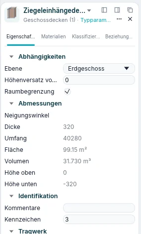
Typparameter enthält das Tragwerk der Geschossdecke (ihre Schichten) und ihre Standarddicke.
Dächer
- Klicken Sie auf Erzeugen ▸ Erstellen ▸ Dach. Der Skizzenmodus beginnt mit Wände auswählen; der Optionsstreifen hat Definiert Neigung, Überstand und In Wand verlängern (bis Kern).
- Wählen Sie die Wände (Tab für die ganze Kette). Jede Linie liegt auf der Außenseite ihrer Wand, um den Überstand nach außen verschoben (von der Fläche des Kerns mit In Wand verlängern (bis Kern)).
- Oder zeichnen Sie die Grundfläche mit Linie oder Rechteck; eine innere Umgrenzung ist eine Öffnung.
- Klicken Sie auf Bearbeitungsmodus beenden.
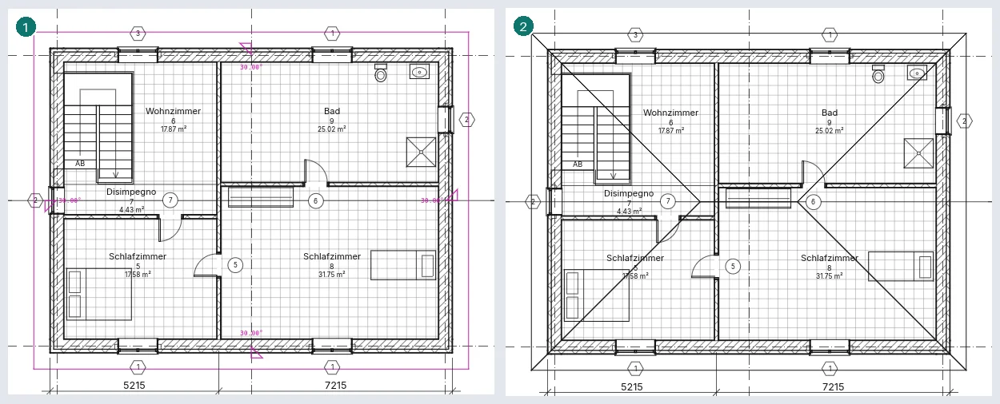
Jede Linie mit Definiert Neigung steigt mit ihrer Neigung (standardmäßig 30°) nach innen an; daneben ist ein kleines Dreieck mit der Neigung gezeichnet. Die Form ergibt sich aus diesen Linien:
- alle Linien definieren die Neigung: ein Walmdach;
- zwei gegenüberliegende nicht: ein Satteldach, und die Wände unter den Giebeln steigen bis zum First, wenn sie fixiert sind;
- keine Linie definiert die Neigung: ein Flachdach, oder ein entlang eines Neigungspfeils geneigtes Dach (dann darf keine Linie eine Neigung definieren).
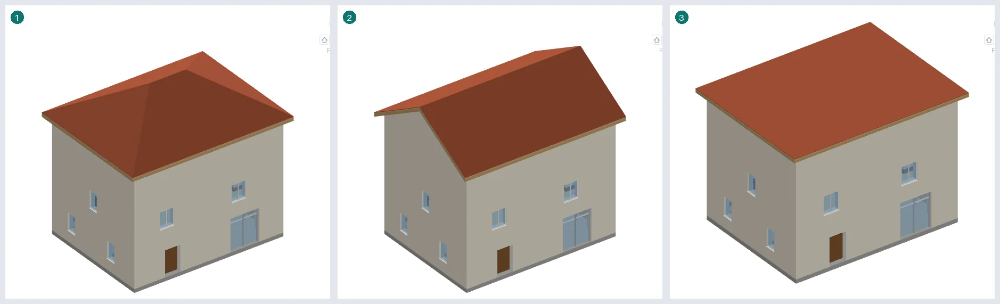
Um eine Linie zu ändern, drücken Sie zweimal Esc, klicken Sie auf die Linie und ändern Sie in Eigenschaften Definiert Dachneigung, Neigung oder (bei aus Wänden gewählten Linien) Überstand.
Wählen Sie Wände, klicken Sie auf Wand ändern ▸ Oben/unten verbinden und dann auf das Dach: Sie steigen bis zu seiner Unterseite, Giebel eingeschlossen (Wände, Türen und Fenster erklärt mehr).
Eigenschaften der Dächer
| Eigenschaft | Was sie ist |
|---|---|
| Basisebene, Basisversatz von Ebene | Wo die Traufen liegen: standardmäßig oben auf den Wänden der Ebene |
| Neigung | Die Neigung jeder Linie, die eine definiert (oder des Pfeils) |
| Dicke, Maximale Firsthöhe, Fläche, Volumen | Schreibgeschützt |
| Kommentare, Kennzeichen | Freier Text |
Im Grundriss zeigt ein Dach seinen Umriss, die Firste und Grate; in 3D seine Dachflächen, Überstände und Schichten.
Extrudierte Dächer
Ein extrudiertes Dach ist ein offenes Profil, auf einer vertikalen Arbeitsebene gezeichnet und entlang der Normalen der Ebene geschoben: ein Vordach über einer Tür, ein Tonnendach, das Dach einer Gaube, auf der Fassadenwand gezeichnet.
- Öffnen Sie eine Ansicht, einen Schnitt oder eine 3D-Ansicht (in einem Grundriss begonnen, fragt Gehe zu Ansicht nach einer).
- Klicken Sie auf Erzeugen ▸ Erstellen ▸ Dach ▾ ▸ Extrudiertes Dach. Das Fenster Arbeitsebene öffnet sich: Wählen Sie eine benannte Ebene, oder Ebene auswählen und klicken Sie auf eine Wandfläche, ein Raster oder eine Referenzebene. Die Ebene muss vertikal sein.
- In Referenzebene und Versatz des Dachs wählen Sie die Ebene (standardmäßig die höchste) und den Versatz: Eine gestrichelte Linie markiert diese Höhe.
- Zeichnen Sie das Profil als eine offene Kette mit Linie, den Bögen oder Linien wählen. Es ist die Oberseite des Dachs: Die Schichten des Typs liegen darunter.
- Klicken Sie auf Bearbeitungsmodus beenden. Das Dach reicht von der Ebene (Extrusionsbeginn 0) quer durch das Gebäude, von Ihnen weg (Extrusionsende).
Ein geschlossenes Profil, eine Verzweigung oder ein Profil, das über sich selbst zurückläuft (ein Teil über einem anderen oder eine vertikale Linie), wird bei Bearbeitungsmodus beenden mit dem Grund abgelehnt: Ein extrudiertes Dach muss nach oben zeigen.
Ausgewählt hat ein extrudiertes Dach Profil bearbeiten (in einer Ansicht oder einem Schnitt vor seiner Ebene oder in 3D) und Arbeitsebene bearbeiten; im Grundriss und in 3D ziehen die Pfeile an seinen beiden Enden Extrusionsbeginn und Extrusionsende. Wände werden an seiner Unterseite wie an jedem Dach angehängt, und Öffnung ▸ Vertikal schneidet es. Es folgt seiner Ebene: Wenn sich die Wand bewegt, auf der es gezeichnet wurde, bewegt sich das Dach mit.
| Eigenschaft | Was sie ist |
|---|---|
| Arbeitsebene | Die Ebene des Profils (schreibgeschützt; geändert mit Arbeitsebene bearbeiten) |
| Extrusionsbeginn, Extrusionsende | Wo die Extrusion beginnt und endet, entlang der Normalen der Ebene |
| Referenzebene, Ebenenversatz | Die Höhe, von der das Profil gemessen wird: Das ganze Dach bewegt sich mit ihnen |
| Sparrenschnitt, Tiefe der Stirnblende | Wie die Traufen an den beiden Enden des Profils geschnitten sind |
| Dicke, Fläche, Volumen | Schreibgeschützt |
Dächer verbinden
Ändern ▸ Formen ▸ Dach verbinden (im BIMopen-Stil Ändern ▸ Dach verbinden) verbindet ein Dach mit der Oberseite eines anderen Dachs oder mit einer Wand: Das Gaubendach trifft das Hauptdach.
- Klicken Sie auf Dach verbinden. Die Dachkanten werden unter dem Cursor hervorgehoben, in einem Grundriss, einem Schnitt, einer Ansicht oder einer 3D-Ansicht.
- Klicken Sie auf die zu verbindende Kante: eine Kante, die keine Neigung definiert (ein Giebel), oder ein Ende eines extrudierten Dachs.
- Klicken Sie auf das Dach oder die Wand, mit dem es verbunden wird. Die Kante verlängert (oder verkürzt) sich, bis das Dach die Oberseite des anderen Dachs oder die Wandfläche trifft; was unter dieser Fläche liegt, wird weggeschnitten.
Eine verbundene Kante erscheint orange: Ein erneuter Klick löst sie. Die Verbindung folgt: Wenn sich Neigung oder Höhe des Hauptdachs ändern, trifft das verbundene Dach es erneut, und eine Verbindung zu einem gelöschten Dach entfällt.
Geneigte Verglasung
Eine geneigte Verglasung ist ein Dach aus Glas: ein Grundflächen- oder Extrusionsdach mit dem Typ Geneigte Verglasung. Jede ebene Fläche des Dachs trägt Fassadenraster, Pfosten und Paneele.
- Zeichnen Sie das Dach wie gewohnt (Dach oder Extrusionsdach).
- Wählen Sie es aus und wählen Sie Geneigte Verglasung in der Typenauswahl. Beim ersten Mal erstellt BIMopen den Typ mit dem verglasten Paneel und den Pfosten des Projekts.
- Jede Fläche wird durch die zwei Raster des Typs geteilt: Raster 1 läuft die Neigung hinauf, entlang der Traufe verteilt; Raster 2 läuft entlang der Traufe, die Neigung hinauf verteilt.
Ist die Verglasung ausgewählt, arbeiten die Fassadenwerkzeuge auf der Fläche unter dem Cursor, in einem Grundriss, einem Schnitt, einer Ansicht oder einer 3D-Ansicht:
- Fassadenraster setzt eine Linie dort, wo Sie klicken: von Raster 1 nahe der Traufe oder dem First, von Raster 2 nahe einer Seite. TAB wechselt zum anderen Raster. Alle Segmente, Ein Segment und Alle außer ausgewählten wirken wie bei einer Fassade.
- Pfosten setzt Pfosten des gewählten Typs auf eine Rasterlinie, ein Rasterliniensegment oder Alle Rasterlinien der Fläche.
- Paneel ändert das angeklickte Paneel in den Typ der Auswahl: verglast, massiv, eine Tür oder leer.
- Segmente hinzufügen/entfernen entfernt das angeklickte Segment (die zwei Paneele werden eins) oder setzt es wieder.
| Eigenschaft | Was sie ist |
|---|---|
| Fassadenpaneel (Typ) | Das Paneel jeder Zelle |
| Verbindungsbedingung (Typ) | Welche Pfosten durchlaufen, wo sich die Raster kreuzen: Raster 1, Raster 2 oder die Ränder mit einem von beiden |
| Rastermuster 1/2 (Typ): Layout, Abstand, An Pfostengröße anpassen | Wie jedes Raster seine Linien setzt: keine, fester Abstand, feste Anzahl, maximaler Abstand |
| Pfosten Raster 1/2 (Typ): Typ innen, Typ Rand 1, Typ Rand 2 | Die Pfosten auf den Linien und an den Kanten der Fläche |
| Anzahl, Ausrichtung, Winkel, Versatz von Raster 1 und 2 | Die eigenen Werte dieses Dachs: wie viele Linien (feste Anzahl), wohin der Rest geht, wie die Linien auf der Fläche gedreht sind (−89° bis 89°), wie weit sie verschoben sind |
| Paneele, Pfosten | Anzahl, schreibgeschützt |
Im Grundriss zeigt die Verglasung Paneele und Pfosten von oben; Sichtbarkeit/Grafik blendet Fassadenpaneele und -pfosten aus wie bei Fassaden. IFC schreibt ein Dach aus Platten und Stäben.
Dachuntersichten
Eine Dachuntersicht schließt die Unterseite der Traufe zwischen den Wänden und der Dachkante.
- Klicken Sie in einem Grundriss oder einer 3D-Ansicht auf Modellieren ▸ Erstellen ▸ Dach ▾ ▸ Dachuntersicht. Der Skizzenmodus beginnt mit Dachkanten auswählen.
- Klicken Sie auf die Kanten des Dachs: ihre Linien bleiben am Dach gesperrt.
- Klicken Sie auf Wände auswählen und auf die Außenseiten der Wände unter dem Dach (TAB wählt die Kette): diese Linien bleiben an den Wänden gesperrt.
- Schließen Sie die Begrenzung mit Linie und Kürzen/Verlängern und klicken Sie dann auf Bearbeitungsmodus beenden.
Die Oberseite der Dachuntersicht liegt unter der Traufe; ihre Schichten (die Struktur des Typs) hängen darunter. Bewegen sich Dach oder Wände, folgt ihnen die Dachuntersicht. Ein Neigungspfeil oder eine Linie, die die Neigung definiert, neigt sie. Ausgewählt öffnet Begrenzung bearbeiten ihre Skizze wieder.
| Eigenschaft | Was sie ist |
|---|---|
| Struktur, Dicke (Typ) | Die Schichten von oben nach unten und ihre Summe |
| Ebene, Höhenversatz von Ebene | Wo ihre Oberseite liegt |
| Raumbegrenzung | Ob Räume an ihr enden |
| Neigung | Ersetzt die Neigung ihrer geneigten Linie oder ihres Pfeils |
| Umfang, Fläche, Volumen | Schreibgeschützt |
Schnitte schneiden sie mit ihren Schichten, der Deckenplan ihrer Ebene sieht sie von unten; sie hat eine eigene Kategorie in Sichtbarkeit/Grafik und in Bauteillisten, und IFC schreibt sie als Bekleidung.
Treppen
- Klicken Sie auf Erzeugen ▸ Vertikale Verbindungen ▸ Treppen. Der Skizzenmodus beginnt mit Lauf.
- Klicken Sie dort, wo die erste Setzstufe ist, dann dort, wo der Lauf endet: Der Lauf rastet auf
ganze Auftritte ein, und die Statusleiste zählt die erstellten und verbleibenden Setzstufen (zum
Beispiel
9 Setzstufen erstellt, 8 verbleibend). - Für eine Wendung klicken Sie erneut abseits vom Ende des ersten Laufs und zeichnen den nächsten: Ein Podest verbindet sie. Bei jedem Winkel ist das Podest von den Setzstufen der beiden Läufe begrenzt, seine äußere Ecke dort, wo sich ihre Außenseiten treffen; enden die Läufe versetzt, laufen auch die Innenseiten weiter, bis sie sich rechtwinklig treffen, ohne schräge Kante.
- Sind alle Setzstufen platziert, klicken Sie auf Bearbeitungsmodus beenden.
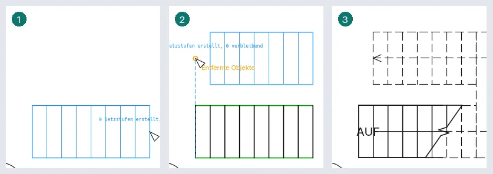
Gestrichelte Hilfslinien zeigen, wo der nächste Lauf beginnen kann: die Verlängerung des letzten Laufs über sein Ende hinaus und die Linien seiner ersten und letzten Setzstufe. Ein Klick in ihrer Nähe rastet auf ihnen ein. In einer 3D-Ansicht wird die Treppe genauso gezeichnet, auf der Ebene der aktiven Ebene.
Ein gebogener Lauf (eine Wendeltreppe): Klicken Sie bei aktivem Lauf auf Bogen mit Mittelpunkt und Endpunkten, dann auf den Mittelpunkt, den Anfang der Lauflinie (ihr Abstand vom Mittelpunkt ist der Radius der Lauflinie) und das Ende, bei Bedarf über eine halbe Drehung hinaus, aber unter einer ganzen (darüber hinaus endet der Lauf vorher und die Statusleiste warnt, dass sich die Läufe überlappen würden). Die Setzstufen gehen strahlenförmig vom Mittelpunkt aus, einen Auftritt voneinander auf der Lauflinie; strahlenförmig gezeichnete Setzstufenlinien ergeben ebenfalls einen gebogenen Lauf. Ein zweiter gebogener Lauf um denselben Mittelpunkt auf derselben Lauflinie (ein Klick in der Nähe übernimmt sie) wird mit dem ersten durch ein Podest entlang des Bogens verbunden.
Eine Treppe kann auch nach ihren Linien gezeichnet werden. Klicken Sie in ihrer Skizze auf Zeichnen ▸ Begrenzung und zeichnen Sie die linke und rechte Kante (grün), dann auf Setzstufe und zeichnen Sie die Setzstufenlinien (schwarz) dazwischen, mit Linie oder Linien wählen. Parallele, gleichmäßig verteilte Setzstufen bilden einen Lauf, so breit wie die Setzstufen; ein Podest verbindet zwei Läufe bis zu den Begrenzungslinien. Jede Setzstufe ist so hoch wie das Geschoss geteilt durch die gewünschte Zahl der Setzstufen; mit weniger Setzstufenlinien endet die Treppe unter der oberen Ebene (Eigenschaften zeigt die tatsächliche Zahl). Skizze bearbeiten gibt dieselben Linien zurück. Jeder mit Lauf gezeichnete Lauf wird sofort zu solchen Begrenzungs- und Setzstufenlinien: Sie lassen sich wie die anderen verschieben oder löschen. Ein Podest folgt seinen Begrenzungslinien: Teilen Sie seine äußere Kante mit Element teilen und ziehen Sie ein Stück für eine Einbuchtung, oder zeichnen Sie es breiter als die Läufe.
Setzstufenlinien müssen weder gerade noch parallel sein: Zeichnen Sie sie mit jedem Zeichenwerkzeug, auch als Bogen, oder stellen Sie eine schräg. Jede Trittstufe ist dann die Fläche zwischen einer Setzstufenlinie und der nächsten ihres Laufs, begrenzt durch die Begrenzungslinien, und das Podest die Fläche zwischen der letzten Setzstufe eines Laufs und der ersten des nächsten; so wird die Treppe im Grundriss, Schnitt, in der Ansicht und in 3D gebaut (eine monolithische Treppe als eine Platte unter ihren Stufen), und ihre Geländer folgen den Begrenzungslinien über diesen Stufen. Eine Setzstufenlinie, die über eine Begrenzung hinausgeht, wird dort abgeschnitten. Eine Setzstufenlinie, die nicht beide Begrenzungen berührt, oder mehr oder weniger Setzstufenlinien, als die Höhe der Treppe braucht, ergeben eine Warnung; die Treppe wird trotzdem erstellt. Eine so gezeichnete Treppe behält ihre Linien, wenn sich Breite oder Tatsächliche Auftrittsbreite ändert: Ändern Sie sie in Skizze bearbeiten. Die Setzstufen folgen aufeinander, wie die Begrenzungen sie verbinden, gleich welche Linie zuerst gezeichnet wurde: Die Treppe beginnt an der Setzstufe, an der die erste Begrenzungslinie beginnt, sonst an der zuerst gezeichneten Setzstufe; eine tiefere Stufe als die anderen (kürzer als ein Podest) bleibt in ihrem Lauf. Die Länge der Stufenkante und das Profil der Trittstufenkante des Typs laufen entlang jeder Setzstufenlinie und entlang der Kante eines Podests über der Setzstufe, die es erreicht (im Grundriss eine Linie vor jeder Setzstufe); die Mittelwangen laufen unter den Stufen von Setzstufenlinie zu Setzstufenlinie und folgen ihnen, wo die Begrenzungen abbiegen; die Unterseite der Wange einer monolithischen Treppe ist auch hier Glatt oder Abgetreppt.
Die Breite im Optionsstreifen ist die der neuen Treppe (standardmäßig die des Typs). Werkzeuge ▸ Geländertyp wählt die Geländer der neuen Treppe: einen Geländertyp, auf beide Seiten gesetzt, oder Keiner.
Die Zahl der Setzstufen ergibt sich aus der Höhe zwischen Basisebene und Obere Ebene (mit ihren Versätzen) und der Maximale Setzstufenhöhe des Typs; eine Ebene oder einen Versatz in Eigenschaften zu ändern ändert die Setzstufen. Skizze bearbeiten öffnet ihre Begrenzungs- und Setzstufenlinien wieder: ändern oder löschen (anklicken, Del) und Läufe neu zeichnen; die Geländer der Treppe folgen. Oberste Ebene bei mehrgeschossiger Treppe wiederholt die Treppe mit ihren Geländern Geschoss für Geschoss bis zu dieser Ebene; ein Geschoss, dessen Höhe nicht der der Treppe entspricht, erhält keine Kopie, und eine Warnung nennt es. Bei ausgewählter Treppe lassen die blauen Umkehrpfeile neben der ersten Setzstufe sie vom anderen Ende aus steigen; Beschriftung AUF, Pfeil AUF, Beschriftung AB und Pfeil AB in Eigenschaften blenden die Teile des Grundrisssymbols ein oder aus. Der quadratische Griff unter dem Text AUF verschiebt ihn.
Im Grundriss ihrer Basisebene zeigt die Treppe ihre Auftritte bis zur Schnittlinie, die Bruchlinie, den Pfeil und den Text AUF; im Grundriss ihrer oberen Ebene zeigt sie sich ganz, mit Podesten und Geländern, ohne Bruchlinie, mit dem Pfeil und dem Text AB bis zur ersten Setzstufe. Auf einer Ebene zwischen zwei Geschossen einer mehrgeschossigen Treppe sind beide Teile zu sehen; in 3D Auftritte und Setzstufen, oder eine monolithische Platte, die Podeste und die Geländer.
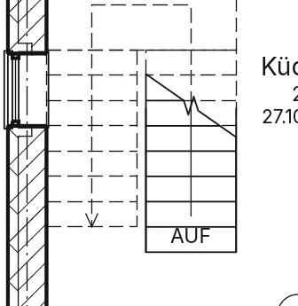
Auf der Basisebene wird auch der Teil der Treppe über der Schnittebene gezeichnet, gestrichelt.
Jeder Teil hat eine Unterkategorie von Treppen in Stile nach Kategorie: Umrisse,
Setzstufenlinien, Vorderkantenlinien, Stützen, Schnittmarkierungen und
Pfeile AUF, jeweils auch
Beschriftungen ▸ Beschriftung ▸ Stufennummerierung: wählen Sie in der Optionsleiste die Referenz (Links, Viertel links, Mitte, Viertel rechts, Rechts), was nummeriert wird (Setzstufen oder Auftritte) und die Startnummer, dann klicken Sie in einem Grundriss auf eine Treppe. Ihre Stufen werden fortlaufend über alle Läufe nummeriert, nur in diesem Grundriss. Bei ausgewählter Treppe zeigen ihre Eigenschaften die Einstellungen der Nummerierung.
Wie eine Treppe aufgebaut ist
Die Typparameter der Treppe bestimmen ihren Aufbau:
- Monolithische Treppe aktiviert: Jeder Lauf ist eine Betonplatte, nach den Stufen geformt; ihre Unterseite verläuft parallel zur Neigung, Plattendicke unter den inneren Ecken der Stufen, und die Podeste sind gleich dick: Die geneigte Unterseite eines Laufs trifft die Unterseite des Podests entlang einer Linie, ohne Stufe; jeder Lauf endet mit seinem letzten Auftritt: Das bündige Podest oder die Decke darüber bildet die letzte Steigung, so erscheinen Stufen und Platte als ein Körper ohne Linie über den Setzstufen.
- sonst Auftritte (Auftrittsdicke) mit Setzstufen (Setzstufentyp Gerade, Setzstufendicke) oder offen (Keine), auf Wangen: Rechte Wange und Linke Wange Geschlossen (ein Brett, in das die Auftritte eingelassen sind), Offen (ein nach den Stufen geschnittenes Brett, die Auftritte darauf) oder Keiner, und Mittelwangen unter den Auftritten, mit ihrer Wangendicke und Wangenhöhe.
- Mit Setzstufe beginnen und Mit Setzstufe enden deaktiviert: Das Brett der ersten oder letzten Setzstufe der Treppe wird nicht gebaut.
- Setzstufentyp Schräg neigt jedes Setzstufenbrett, oben unter der Vorderkante des Auftritts darüber; Verbindung Setzstufe-Auftritt führt jeden Auftritt unter die Setzstufe dahinter (Auftritt unter Setzstufe verlängern) oder die Setzstufe hinter dem Auftritt nach unten (Setzstufe hinter Auftritt verlängern).
- Länge der Stufenkante legt fest, wie weit ein Auftritt über die Setzstufe ragt; Unter Basis verlängern verschiebt den Fuß der Wangen (negativ: unter die Basisebene); Material Auftritt, Material Setzstufe, Material Wange und Material monolithische Treppe färben die Teile; Bruchsymbol im Grundriss und Textgröße steuern das Symbol im Grundriss.
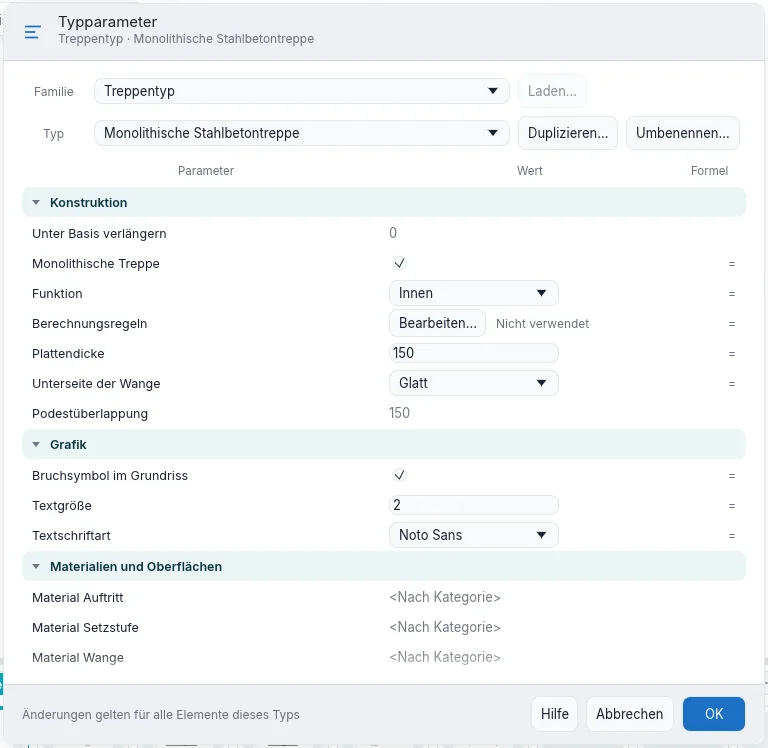
Das Podest endet hinter der letzten Setzstufe des ankommenden Laufs und folgt ihrer Rückseite; bei einer monolithischen Treppe beginnt es an der Vorderseite der Setzstufe. Bei einer monolithischen Treppe, deren obere Decke ihre Kante an der letzten Setzstufe hat, läuft die Unterseite des Laufs unter dieser Decke weiter, bis sie deren Unterseite trifft, wie unter einem Podest.
Ein Schnitt durch die Treppe zeigt sie mit ihrer Platte geschnitten. Volumen in Eigenschaften und in der Bauteilliste der Treppen ist das Volumen ihrer Körper.
Textschriftart, Profil der Trittstufenkante (Standard oder Gerundet) und Kantenprofil anwenden (nur vorn, vorn und links oder vorn, links und rechts: über eine Seite ohne geschlossene Wange hinaus), Versatz offene Treppenwange, Treppenwangen oben abschneiden (An Ebene anpassen endet die seitlichen Wangen an der oberen Ebene) und die Identitätsdaten (Code, Modell, Hersteller, Typenkommentare, URL, Beschreibung, Baugruppenkennzeichen) stehen in den Typeneigenschaften, ebenso die Unterseite der Wange einer monolithischen Treppe (Glatt, eine geneigte Platte, oder Abgetreppt: die Platte folgt den Stufen). Unter Berechnungsregeln prüft Treppenrechner verwenden mit Zielergebnis, maximalem und minimalem Ergebnis 2 Steigungen + 1 Auftritt: Eine Treppe außerhalb des Bereichs wird erstellt, und eine Warnung sagt es.
Neu in der Überarbeitung. In den Eigenschaften einer Treppe oder Rampe zeigt AUF-Pfeil in allen Ansichten den ganzen Pfeil und AUF auch im Grundriss der oberen Ebene. Die Gewünschte Anzahl Steigungen lässt sich eingeben: die Steigungen werden so hoch wie das Geschoss geteilt durch diese Zahl (eine Zahl, die sie höher als die Maximale Steigungshöhe des Typs machen würde, wird abgelehnt). Übersteigen die gezeichneten Steigungen die gewünschten oder ist die Tatsächliche Auftrittstiefe kleiner als das Minimum des Typs, wird die Treppe mit einer Warnung erstellt. Mit Treppenrechner verwenden im Typ beginnt eine neue Treppe mit dem Auftritt, der das Zielergebnis ergibt. Der Dialog Geländertyp bietet auch Standard, den Typ des Geländer-Werkzeugs. In der Skizze hat die gestrichelte Lauflinie jedes Laufs einen Griff am Ende: gezogen fügt er Steigungen hinzu oder nimmt welche weg. Arbeitsebene ▸ Festlegen in der Skizze einer neuen Treppe setzt sie auf eine andere Ebene. Der Text AUF/AB wird an seinem Griff auch mit dem Cursor darüber, nach Tab auf der hervorgehobenen Treppe und im Grundriss der oberen Ebene gezogen. Im Typ: Höhe der Wange unter der Treppe verschiebt die Seitenwangen unter den Auftritten, Höhe der Podestwange ist die Höhe der Wangen entlang der Podeste, Wangen oben abschneiden hat auch An Podestwange angleichen, und Podestüberlappung (abgestufte massive Treppen) ist der Abstand der senkrechten Flächen hinter den Setzstufen; der Typ hat auch die Kosten.
Treppenrechner. In den Typeigenschaften sind die Berechnungsregeln eine Zeile mit ihrer Zusammenfassung (zum Beispiel «2 × A + 1 × P = 630 mm, 600–650») und der Schaltfläche Bearbeiten…, die den Treppenrechner öffnet: Treppenrechner verwenden, die Faktoren für Steigung und Auftritt (0,5 bis 5, eine Dezimalstelle), Ziel-, Maximal- und Minimalergebnis. Das Ergebnis der ausgewählten Treppe wird sofort aktualisiert, grün innerhalb des Bereichs, rot außerhalb; ist das Maximum kleiner als das Minimum, ist OK deaktiviert. OK gibt dem Typ die Regeln in einem Rückgängig-Schritt; vorhandene Treppen behalten ihren Auftritt, neue übernehmen ihn aus den Faktoren. Im BIMopen-Stil hat der Dialog eine Vorschau.
Rampen
- Klicken Sie auf Erzeugen ▸ Vertikale Verbindungen ▸ Rampe. Der Skizzenmodus beginnt mit Lauf.
- Klicken Sie, wo ein Lauf beginnt, dann wo er endet: Er ist höchstens so steil wie die Maximale Rampenneigung (1/x) des Typs und steigt höchstens um die Maximale geneigte Länge (beim Zeichnen endet ein längerer Lauf dort); neben dem Cursor stehen die erstellte und die verbleibende Länge.
- Zeichnen Sie den nächsten Lauf entfernt vom Ende des ersten: Ein Podest verbindet sie. Begrenzung und Setzstufe zeichnen eine Rampe nach ihren Linien, mit einer Setzstufenlinie am Anfang und am Ende jedes Laufs.
- Klicken Sie auf Bearbeitungsmodus beenden.
Die Form des Typs ist Dick (mit seiner Dicke) oder Massiv (bis zur Basis), und Rampenmaterial färbt sie. Geländer, Skizze bearbeiten und Eigenschaften funktionieren wie bei Treppen.
Mit Bogen aus Mittelpunkt und Endpunkt in der Gruppe Zeichnen klicken Sie den Mittelpunkt, den Anfang der Lauflinie und dann ihr Ende um den Mittelpunkt: Der Lauf biegt sich um ihn, mit zwei vom Mittelpunkt ausgehenden Linien an den Enden und zwei Begrenzungsbögen an den Seiten. Pfeil AUF in allen Ansichten anzeigen des Typs zeichnet den ganzen Pfeil und AUF auch im Grundriss der oberen Ebene; Textschriftart und Identitätsdaten wie bei Treppen.
Geländer
- Klicken Sie auf Erzeugen ▸ Vertikale Verbindungen ▸ Geländer.
- Zeichnen Sie den Pfad mit Linie: eine einzige Kette verbundener Linien (ein Pfad in Stücken, ein geschlossener oder ein auf sich selbst zurücklaufender Pfad wird von Bearbeitungsmodus beenden abgelehnt).
- Um das Geländer auf eine Treppe zu setzen, klicken Sie auf Werkzeuge ▸ Neues Basisbauteil wählen und dann auf die Treppe: Der darauf gezeichnete Pfad steigt mit der Treppe.
- Klicken Sie auf Bearbeitungsmodus beenden.
Pfad bearbeiten öffnet den Pfad eines Geländers wieder. Erzeugen ▸ Vertikale Verbindungen ▸ Geländer ▸ Auf Träger platzieren setzt ein Geländer auf jede Seite der angeklickten Treppe oder Rampe: In der Optionsleiste wählt Position Auf Auftritten (an der Treppenkante) oder Auf Wange (über der Wange, wo die Treppe eine hat), Versatz vom Pfad rückt es zur Innenseite der Treppe und Umkehren wechselt zwischen beiden Positionen. Dieselben zwei Werte stehen in den Eigenschaften eines Treppengeländers.
Die Typparameter des Geländers gelten für alle Geländer dieses Typs: Geländerhöhe (die des oberen Handlaufs), Abstand der Geländerstäbe, Versatz der Geländerstäbe (Stäbe und Pfosten seitlich verschoben) und die Identitätsdaten; die Vorschau zeigt das Geländer auf einer Beispieltreppe von der Seite. Handlaufstruktur (nicht durchgehend) ▸ Bearbeiten… öffnet die Liste der Handläufe unter dem oberen (Name, Höhe über der Gehfläche, Versatz zur Seite, quadratischer oder runder Querschnitt) mit Einfügen, Löschen, Nach oben und Nach unten. Platzierung der Geländerstäbe ▸ Bearbeiten… öffnet das Hauptmuster: der Stab oder Keine, wo er beginnt und endet (Basisbauteil, Oberer Handlauf oder einer der Handläufe) mit ihren Versätzen, der Abstand der Stäbe, Muster unterbrechen bei (am Ende jedes Segments, bei Winkeln größer als ein Wert oder nie), Ausrichten, Restlänge füllen und Geländerstab je Auftritt mit der Anzahl je Auftritt; und die Pfosten am Anfang, an den Ecken und am Ende (der Pfosten oder Keiner, seine Versätze, Lücke entlang des Pfads, Versatz zur Seite) mit Eckpfosten bei. Die Änderungen in diesen beiden Fenstern gelten mit OK und werden mit einem einzigen Ctrl+Z rückgängig gemacht. Die Zeilen Oberer Handlauf, Handlauf 1 und Handlauf 2 sind grau: noch nicht verfügbar.
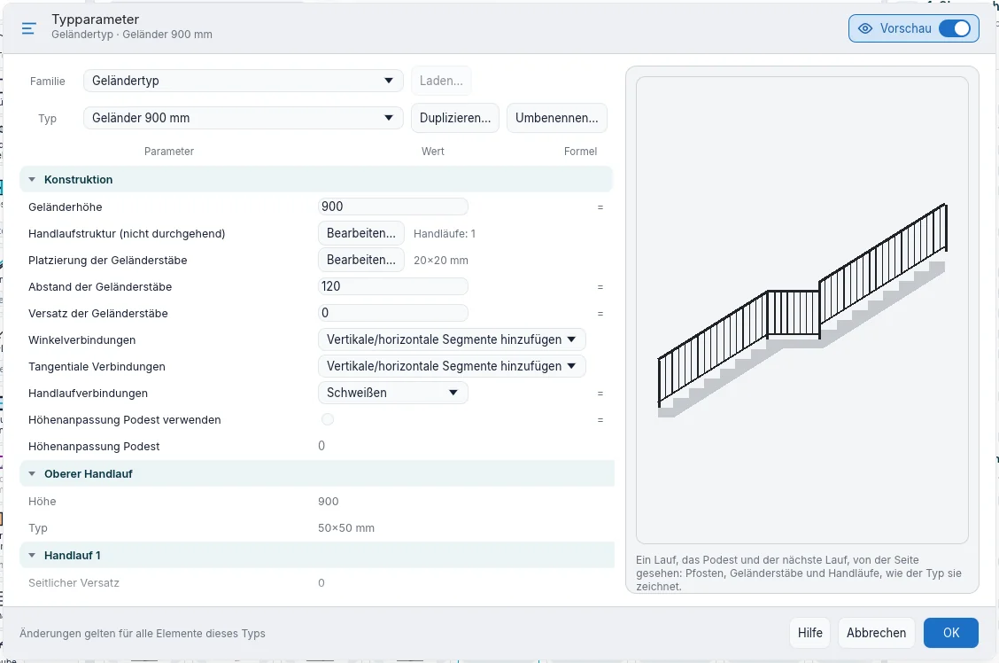
Die Geländer einer Treppe laufen als ein Handlauf über die Podeste weiter, in ihrer Höhe über der Linie der Stufenvorderkanten und über den Podesten. Wo ein Lauf ein Podest eine Steigung höher verlässt, entscheiden die Tangentiale Verbindungen (der Handlauf geht gerade weiter) und die Winkelverbindungen (er knickt ab) des Typs: Handläufe bis zur Verbindung verlängern (nur tangential) führt den geneigten Handlauf bis zum Podest hinunter, Vertikale/horizontale Segmente hinzufügen steigt an der ersten Setzstufe senkrecht auf, Kein Verbindungsstück lässt eine Lücke.
Die Handläufe sind an jeder Verbindung auf Gehrung geschnitten, wo der Pfad abknickt und wo sich die Neigung ändert: mit Handlaufverbindungen Schweißen ist jeder Handlauf ein Stück, mit Stutzen sind seine Stücke an der senkrechten Ebene der Verbindung geschnitten. Ein Pfosten steht am Anfang und am Ende jedes Geländers und an jeder Richtungsänderung im Grundriss und wo sich die Neigung ändert, etwa wo ein Lauf auf ein Podest trifft. Höhenanpassung Podest verwenden mit Höhenanpassung Podest hebt (oder senkt) den Handlauf über den Podesten um diesen Wert.
Der Pfad eines Treppengeländers folgt dem Umriss der Treppe. Jeder Pfosten steht ganz auf dem Auftritt, dem Podest oder dem Boden darunter: Wo er auf die Linie einer Setzstufe fiele, rückt er um eine halbe Querschnittsbreite, so dass kein Pfosten in die Stufen ragt oder vor der ersten schwebt. Zwischen zwei Pfosten haben die Geländerstäbe gleichen Abstand, nie größer als der eingestellte.
Auf Träger platzieren funktioniert in Grundrissen und in der 3D-Ansicht: Die Treppe unter dem Cursor zeigt, wo die beiden Geländer hinkommen. Auf Wange lässt sich nur für eine Treppe mit Wange wählen: Bei einer monolithischen Treppe ist es grau, in der Optionsleiste und in den Eigenschaften. Ein neuer Geländertyp hat Winkelverbindungen und Tangentiale Verbindungen auf Vertikale/horizontale Segmente hinzufügen, Schweißen, keine Podesthöhenanpassung, einen unteren Handlauf auf 0,100 m (30×30), Geländerstäbe 20×20 vom unteren bis zum oberen Handlauf alle 0,120 m, am Ende jedes Segments unterbrochen und an seine Länge angepasst, und Pfosten 50×50 auf dem Basisbauteil: Wo ein Lauf auf ein Podest trifft, steht der Pfosten auf dem Podest an der Setzstufenlinie, mit dem senkrechten Stück des Handlaufs, und nichts verläuft über den Stufen. Wo der Handlauf am Anfang eines Laufs senkrecht steigt, bleibt ein niedriger Handlauf auf dem Podest, ohne in die erste Stufe einzudringen.
Neu in der Überarbeitung. Der Pfad eines Geländers wird mit allen Werkzeugen der Gruppe Zeichnen gezeichnet: ein Bogen bleibt im Geländer, in 3D und in Pfad bearbeiten ein Bogen, mit Pfosten nur an Anfang und Ende. Neuen Host wählen nimmt auch einen Boden: das Geländer steht auf seiner Oberseite. In Pfad bearbeiten bietet die Optionsleiste bei einer ausgewählten Linie Höhenkorrektur (Nach Typ oder Benutzerdefiniert mit Wert) und Neigung (Nach Host, Flach, Geneigt); Werkzeuge ▸ Verbindungen bearbeiten zeigt einen Rahmen um den Stoß unter dem Cursor, ein Klick markiert ihn mit einem X und Verbindung in der Optionsleiste wählt, wie die Handläufe dort zusammenkommen. In Handlaufstruktur hat jeder Handlauf sein Material.
Bauteile
- Klicken Sie auf Erzeugen ▸ Erstellen ▸ Bauteil. Die Typenauswahl listet die im Projekt geladenen Bauteile; eine Vorschau folgt dem Cursor, im Grundriss und in der 3D-Ansicht.
- Drücken Sie die Space, um die Vorschau um 90° zu drehen.
- Klicken Sie, um das Bauteil auf der Ebene des Grundrisses zu platzieren.
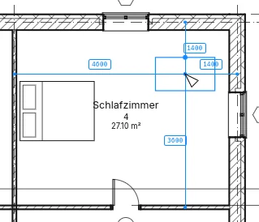
Modus ▸ Komponente laden öffnet die Bibliothek, nach Ordnern (Möbel, Einbaumöbel, Sanitärobjekte): Wählen Sie eine Komponente, um ihre Typen mit ihren Maßen (Breite × Tiefe × Höhe) zu sehen, und klicken Sie auf Öffnen, um sie dem Projekt hinzuzufügen.
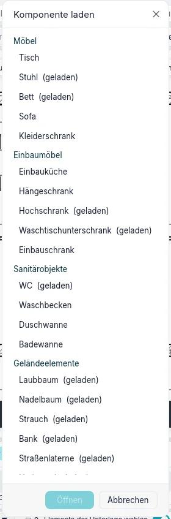
Wählen Sie ein Bauteil und klicken Sie auf Basisbauteil ▸ Neues Basisbauteil wählen, dann auf eine Geschossdecke: Das Bauteil wandert auf die Geschossdecke und bleibt auf ihrer Oberseite (ein Klick auf einen leeren Punkt setzt es zurück auf die Ebene). Seine Eigenschaften sind Ebene, Basisbauteil, Höhenversatz von Ebene, Drehung, Kennzeichen und Kommentare; Typparameter enthält Breite, Tiefe, Höhe und Material.
Einbaumöbel
Einbaumöbel sind eine eigene Kategorie neben den Möbeln: die fest eingebauten Elemente von Küchen und Bädern. Ihr Bibliotheksordner enthält die Küchenzeile (3,00 und 2,40 m lang), den Hängeschrank (60, 90 und 120 cm breit, 35 cm tief, 70 cm hoch), den Hochschrank 60 (60 × 60 cm, 2,10 m hoch), den Waschtischunterschrank 80 und den Einbauschrank; der freistehende Kleiderschrank bleibt ein Möbel. Ein Hängeschrank wird 1,45 m über seiner Ebene platziert: der Standardversatz seines Typs gibt an, wie hoch neue gesetzt werden, und jeder behält seinen eigenen Versatz von Ebene.
Einbaumöbel werden nach dem Ansichtsbereich des Grundrisses gezeichnet, wie Wände:
- ein Element, das die Schnittebene kreuzt (ein Hochschrank, bei 1,20 m), ist geschnitten: sein Umriss mit der Schnittlinienstärke der Kategorie, gefüllt mit dem Schnittmuster seines Materials;
- ein Element unter der Schnittebene (die Küchenzeile) wird von oben gesehen, in Projektion;
- ein Element über der Schnittebene und unter der Oberkante des Ansichtsbereichs (ein Hängeschrank) wird ebenfalls von oben gesehen, gestrichelt; über der Oberkante wird es nicht gezeichnet.
Möbel und Sanitärobjekte werden nie geschnitten: wo die Schnittebene sie kreuzt, werden sie ganz gezeichnet, darüber nicht. Daher geben Sichtbarkeit/Grafiken und Objektstile den Einbaumöbeln Schnittlinien und Schnittmuster und zeigen dort «—» für Möbel und Sanitärobjekte. Einbaumöbel haben ihre eigene Zeile in Filtern, Bauteillisten (Bauteilliste/Mengen ▸ Einbaumöbel), Materiallisten, Projekt- und gemeinsam genutzten Parametern und Legenden. Ein Projekt, das gespeichert wurde, bevor Einbaumöbel eine eigene Kategorie hatten, öffnet sich mit seinen Küchenzeilen als Einbaumöbel, und die Meldung beim Öffnen sagt, wie viele. IFC exportieren schreibt Einbaumöbel als Möbel mit der Kennung Casework; beim Import werden Möbel, die wie ein Schrank, eine Arbeitsplatte, ein Waschtischunterschrank oder eine Küche heißen, als Einbaumöbel vorgeschlagen.
Bauteillisten und IFC
Geschossdecken, Dächer, Treppen, Geländer und Möbel haben ihre Bauteillisten (Ansichten ▸ Erzeugen ▸ Bauteillisten ▸ Bauteilliste/Mengen), eine Zeile je Element. Exportieren ▸ IFC4 exportieren… schreibt Geschossdecken als Platten (mit Öffnungen und Neigungen), Dächer, Treppen mit Läufen und Podesten, Geländer, Möbel und Sanitärobjekte. Eine mehrgeschossige Treppe wird in jedem Geschoss, in dem sie sich wiederholt, einmal geschrieben, mit ihren Geländern.
Noch nicht in BIMopen
Deckenränder, Traufbretter und Dachrinnen kommen nach der Neuausrichtung dieses Kapitels. Abgehängte Decken haben ein eigenes Kapitel, Decken und Stützen; Schächte und Öffnungen in Geschossdecken, Dächern und Wänden stehen in Öffnungen.